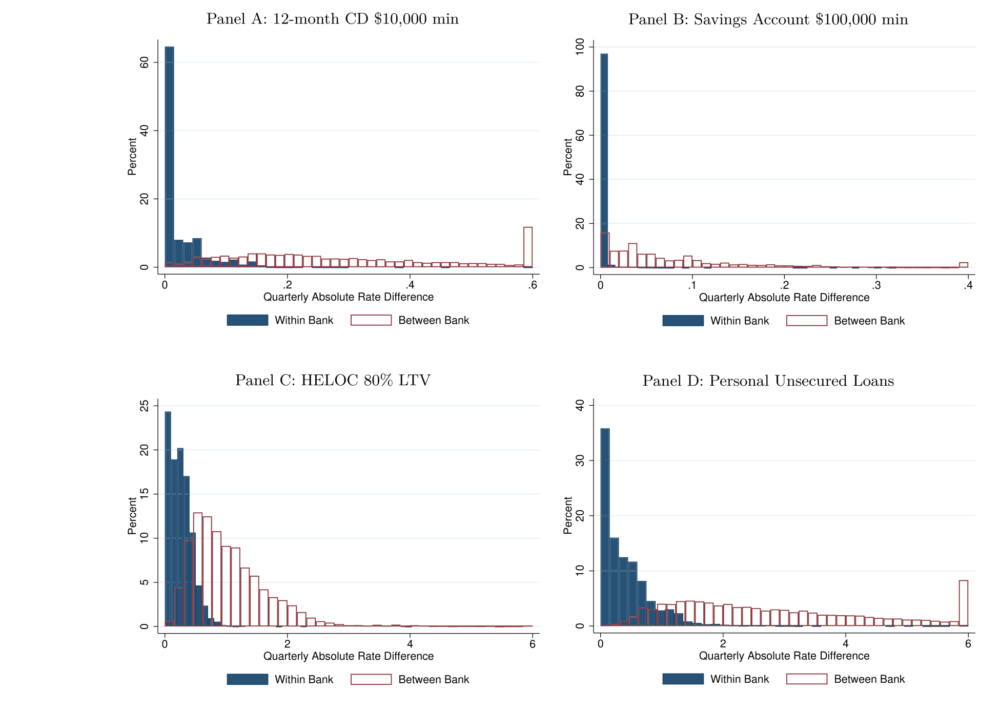
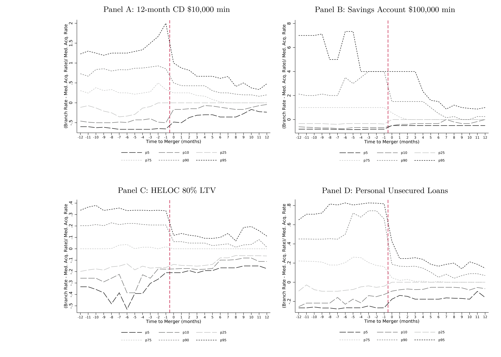
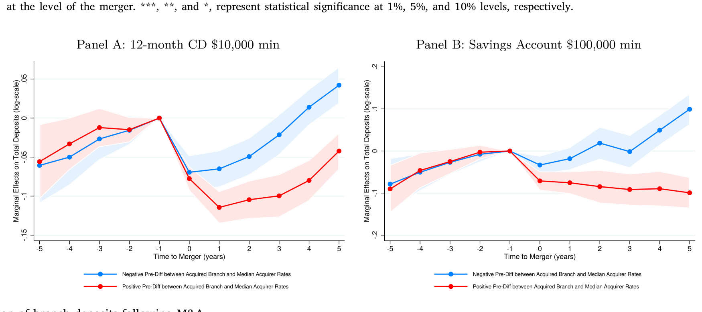
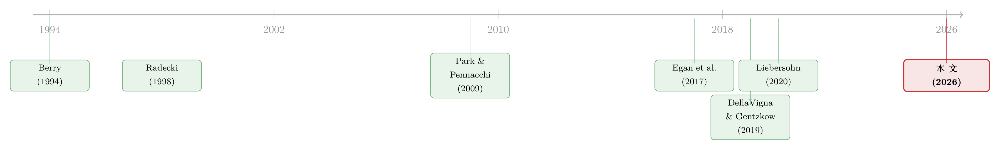

你以为银行在跟邻居竞争，其实它在全国统一调价
本文读的是 Granja & Paixão (2026, Journal of Financial Economics)：美国银行在自己的分行网络里高度「统一定价」，而反垄断审查却只盯着「本地市场集中度」。作者先用 RateWatch 数据证明同一家银行各分行的利率几乎一致，再用一个结构模型把「统一定价」从「分行质量趋同」里剥离出来，最后做反事实——结论很扎心：在监管要求收购方剥离分行的那些案子里，平均约有 7% 的消费者福利损失，恰恰因为监管没想到「统一定价」本会让被收购分行拿到更好的存款利率。
1 一桩都没拦下来
先讲一个数字。1990 年，美国大约有 15,000 家银行；到 2021 年，只剩不到 5,000 家。三十年里，超过三分之二的银行消失在一轮又一轮的并购里。
按理说，并购是反垄断审查的重点战场。监管确实审了——每一桩银行并购申请都过了一遍筛子，盯着那些可能抬高加成、损害消费者的交易。可结果呢？在这整段时间里，反垄断当局一桩并购都没有正式否决过（Wollmann, 2019）。最多是在本地存款集中度会冲过某个门槛时，要求收购方做点「补救」——比如卖掉几家分行。
于是参议员 Elizabeth Warren 干脆提了一部《银行并购审查现代化法案》，说要「终结对银行并购的橡皮图章」。2022 年 FDIC 的人事变动，也把「重修并购审查流程」摆上了最优先的位置（Ackerman, 2022）。
那监管到底在审什么？答案是：本地市场集中度。逻辑听起来天经地义——零售银行业务是高度本地化的。2019 年消费者金融调查里，75% 的受访者说，他们打交道的银行，分行就在离家五英里以内。既然需求是本地的，那一桩并购如果在某个本地市场把份额做大了，合并后的银行就更有底气抬高加成、压低存款利率。所以审查的核心动作，就是算一算这桩交易会让本地的赫芬达尔指数 (Herfindahl–Hirschman Index, HHI) 涨多少。
这一切都很顺，直到你注意到一个被零售业和银行业研究反复发现、却一直没被反垄断逻辑认真对待的事实。
2 张力：价格根本不是「本地」定的
零售连锁的研究早就发现：跨多个市场经营的企业，是集中定价的——同一件商品，在它所有门店里挂着几乎一样的价签，哪怕隔壁不同品牌的店卖着完全不同的价（Nakamura, 2008；DellaVigna & Gentzkow, 2019；Hitsch et al., 2019）。银行业也一样（Radecki, 1998；Park & Pennacchi, 2009；Yankov, 2018）。
这就和反垄断的整套逻辑撞上了。如果一家银行的存款利率不是在每个本地市场单独决定、而是全网拉平的，那么「合并后本地份额上升 → 本地涨价」这条因果链，还成立吗？
这正是本文要拧开的那颗螺丝。作者问了三个层层递进的问题：第一，高度统一定价，会不会改变并购双方分行的利率走向？第二，统一定价会怎样扭曲「本地集中度」和「本地价格」之间的关系？第三，在反垄断审查里忽视统一定价，会不会反而做出损害消费者的决定？
我们一步步看。
3 首先：统一定价到底有多普遍
数据来自 RateWatch——它每周调查超过 100,000 家分行，记录新开户的存贷款广告利率。这是迄今覆盖最广的一套分行级利率数据。作者剔除单分行银行（因为研究的本就是「一家银行如何在多个分行间定价」），主力分析锁定四个标准化产品：12 个月期、起存 1 万美元的定期存单（12MCD10K）、起存 10 万美元的储蓄账户、贷款价值比 80% 且额度 2 万美元的房屋净值信贷额度 (HELOC)，以及个人无抵押贷款。
第一个事实就足够震撼：在过去二十年里，同一家银行不同分行之间的利率差异，解释了全美所有分行存贷款利率变异的不到 10%。换句话说，「同行的两家分行」之间的利率绝对差，远远小于「不同行的两家分行」之间的差。如图 4 所示，把「同一银行 vs 不同银行」的分行配对放在一起比，差距一目了然。

Figure 4: Quarterly absolute rate differences: Same bank vs. Different bank comparisons
而且统一定价越来越彻底：行内利率变异在 2004–2007 年还占到全部变异的约 20%–30%，但从 2008 年起，这个比例掉到了 5% 以下。也就是说，今天一家银行的某个分行报什么利率，几乎完全由「它属于哪家银行」决定，跟「它开在哪个镇上」关系不大了。
这一点本身就值得停一下：统一定价不是个别大行的怪癖，而是整个零售银行业越来越主流的「行规」。后面所有的故事，都建立在这块地基上。
4 接着：合并之后，谁向谁靠拢
既然银行全网统一定价，那当 A 银行收购 B 银行，B 的分行会怎样？
一个自然的猜测是：B 的分行会被「同化」，利率向 A 看齐。数据正是这样。合并完成后，收购方与被收购方分行之间的利率绝对差立刻、大幅地收窄，而且在多个存贷款产品上都成立，收购方越是统一定价的「死硬派」，收敛得越彻底。如图 6 所示，把利率差放在事件时间里看，合并那一刻就是一道清晰的台阶。

Figure 6: Relative percent difference between branch rate and median rate of acquirer in event time
但真正有意思的是收敛的方向。
直觉上你可能会想：收购方总是把被收购分行的高利率往下压（省成本），把自己分行的高利率也降下来。可数据不支持这个故事。收敛几乎全部发生在被收购分行这一侧，而且不分青红皂白——不管原来是谁的利率更高。
这就带来一个反直觉的推论：并购有可能让被收购分行的客户拿到更好的利率——只要收购方本来就报着更高的利率。作者给的量级很具体：那 20% 原本定存利率高于收购方的被收购分行，合并后平均降了约 29 bps；而那 20% 原本利率低于收购方的被收购分行，存款利率平均涨了约 24 bps。一升一降，对称得近乎优雅。
更进一步，那些因为统一定价而「被动涨息」的被收购分行，在随后五年里吸收的存款也明显更多——储户用脚投票。如图 7 所示，涨息分行的存款增长跑赢了其他被收购分行。

Figure 7: Evolution of branch deposits following M&A
5 然后是反转：集中度，还是收敛，谁说了算
到这里，自然要回到反垄断最关心的那个问题：合并后被收购分行的利率变化，到底是「本地集中度上升」造成的，还是「统一定价导致的收敛」造成的？
作者把两者放进同一个回归里掰扯。结果对「集中度→市场势力」这条故事只有部分支持：
- 当本地集中度被预测会上升超过 200 点（这是触发深度审查的门槛之一）时，被收购分行的定存利率在合并后下降约
11 bps； - 可当集中度上升不到 200 点时，定存利率**也下降了约 `8.5 bps``。
两者差别很小。如果真是市场势力在作祟，集中度大涨的那组本该跌得明显更多才对。而且在其他存款产品和贷款产品上，作者并没有稳定地发现「集中度涨得多的分行利率更差」。
反过来，合并前收购方与被收购方之间的利率差，才是预测合并后利率走向的强变量——不论看哪个产品都成立。前面那组 29 bps、24 bps 的对称变化，正是这条逻辑的体现。
这里有一个识别上的隐忧，作者自己也点破了：那些最该被拦下来的并购，可能恰恰因为监管出手要求补救，而从未以「未受干预」的面目出现在数据里。这会让「集中度→涨价」的真实因果被低估。
为应对这个内生性，作者借了 Liebersohn (2020) 的招：审查指引规定，合并后本地集中度若低于 1,800 就不必走详细审查。于是这些并购哪怕显著抬高了本地集中度，也会「合法地」少受关注。作者就盯住那批合并后集中度略低于 1,800 门槛的被收购分行。结果如预期——在这个「监管够不着」的子样本里，集中度与价格的关联确实更强了。但即便在这里，合并前利率差对未来利率的预测力，依然盖过了集中度的变化。
故事讲到这儿，经验证据已经把矛头指向同一个结论：是银行的定价政策（统一定价），而不是单纯的本地份额，在中介着「集中度」和「利率」之间的关系。可是——
6 但真正关键的一步：把「统一定价」从「质量趋同」里剥出来
经验相关性再漂亮，也有一个绕不开的替代解释：收购方接手后，可能给被收购分行升级了服务、流动性体验、客户关系（d'Avernas et al., 2023），让分行质量向收购方趋同。质量趋同同样会带来利率收敛。那么，前面看到的收敛里，到底有多少真是「统一定价」，有多少只是「质量变好」？
光靠回归分不开这两者。于是作者搬出了本文的重器：一个银行业垄断竞争的结构模型。
6.1 需求侧：储户在挑什么
消费者对某个本地市场里的差异化分行有偏好。需求既取决于存款利率，也取决于分行和银行层面的特征——本地关系与客户资本、银行分行网络在该市场的地理覆盖，以及其他不随时间变化的银行与邮编特征。
沿用经典的离散选择需求估计（Berry, 1994；Berry et al., 1995；Nevo, 2001），作者估计储户对「价格」和「非价格特征」各自的估值。识别的关键假设是：分行层面不可观测特征的变化，与外生的分行利率变化不相关。
那利率的外生变异从哪来？这是全文最巧的一步：作者用统一定价本身来造工具变量——拿同一家银行在其他市场的分行所报的利率，去为某个分行的利率做工具（Hausman, 1996；Nevo, 2001；DellaVigna & Gentzkow, 2019）。直觉是：同行其他市场的利率，反映的是「全网统一定价」这个总部决策，而与某个特定本地市场的需求冲击无关。再加上银行固定效应吸收「银行质量」这个不可观测项。
6.2 供给侧：两种定价规则的「一阶条件」
这才是模型的灵魂。作者让供给端有两种可能：
（一）本地定价 (local pricing)。 银行在每个市场单独定价、最大化本地利润。此时是标准的垄断定价公式——某市场的存款利差等于该市场需求半弹性的倒数：
$$ \text{spread}_{bm} \;=\; \frac{1}{\eta_{bm}} $$
这里 \(\text{spread}_{bm}\) 是银行 \(b\) 在市场 \(m\) 的存款利差（市场基准利率减去存款利率），\(\eta_{bm}\) 是该市场存款利率的需求半弹性。哪个市场的储户对利率越不敏感（\(\eta\) 越小），银行就越敢压低利率、把利差做厚。
（二）统一定价 (uniform pricing)。 银行给所有分行定同一个利率、最大化全行总利润。此时一阶条件变成：银行的存款利差，等于各市场需求半弹性按存款占比加权之和的倒数。这就是把全文经验现象「翻译」成模型的那一个方程：
把这两个方程并排放，整篇论文的张力就一目了然了。
在本地定价下，收购方一旦在某个重叠市场拿到更大份额、当地需求变得更不敏感（\(\eta_{bm}\) 下降），它就会专门压低那个市场被收购分行的利率——这正是反垄断担心的「本地市场势力」。
而在统一定价下，收购方不会盯着单个市场调价，而是把每家分行的利率拉向那个由加权平均半弹性决定的全行统一利率。于是它对本地集中度的敏感度天然就低。更妙的是，模型对不重叠分行的预测截然不同：本地定价模型说，合并不会影响收购方那些没和被收购方重叠的分行的利率；而统一定价模型说，只要全行统一利率因合并而变，这个变化会扩散到收购方所有市场的分行——哪怕那些市场根本没发生过任何「合并」。
6.3 模拟与裁决
作者用估计出的模型，把样本里的每一桩合并都模拟一遍，解一个不动点问题，算出「统一定价」和「本地定价」两种情形下的均衡合并后利率。关键设计在于：两种情形都让被收购分行采纳收购方的质量特征——这样两者之差，就只反映统一定价的作用，把「质量趋同」干净地控制住了。
裁决结果是：同时包含「质量趋同 + 统一定价」的模型，比只有「质量趋同、没有统一定价」的模型，更能解释被收购分行合并后实际观测到的利率演变。而且，那些不与被收购方重叠的收购方分行，其实际利率变化，与统一定价模型预测的均衡利率变化正相关——这恰是统一定价独有的「外溢」指纹。质量趋同解释不了它，因为这些分行的质量根本没动。
7 于是落点：强拆分行，有时反而坑了储户
模型最大的价值，不在确认收敛，而在能做反事实。
过去二十年，反垄断虽没否决任何并购，却屡屡要求收购方在那些会显著抬高集中度的本地市场剥离分行（Liebersohn, 2020）。问题是：在一个银行全网统一定价的世界里，这种强制剥离，真的提升了储户福利吗？
作者构造了一个「不要求剥离」的反事实，与监管当年实际要求的剥离作比较。结论是：强制剥离并不总是改善福利。
- 当收购方本来就报较差的存款利率时，剥离对当地消费者有利——因为接手被剥离分行的那家银行，往往给出更好的利率；
- 可当收购方本会因为统一定价而抬高存款利率时，强制剥离平均带来约 7% 的消费者福利损失。
差别的根源，正是统一定价的那条外溢逻辑：被迫剥离的收购方，原本会给被收购分行报出比接盘方更高的利率。监管以为自己在「保护本地竞争」，实际上却把储户从一个会涨息的东家手里，推给了一个利率更差的东家。
一句话的政策含义：当需求是本地的、但定价是全国统一的，单看本地集中度的并购审查会系统性地误判。监管或许该在 HHI 之外，补上能刻画统一定价后果的结构性分析。
关于「存款往哪儿流」本身就具有独立的宏观含义，可参见《存款往哪儿流，比哪家银行倒下更重要》；而统一定价与货币政策传导的张力，也呼应了《同样的加息，为什么德国的银行和西班牙的银行走向相反？》里的讨论。
8 文献脉络
把这篇论文放回它生长的那条线上，会看得更清楚。
需求估计的方法论根，扎在 Berry (1994) 与 Berry, Levinsohn & Pakes (1995) 开创的离散选择需求模型上，Nevo (2001) 把它发扬光大；本文的银行需求设定，则直接师承 Egan, Hortaçsu & Matvos (2017) 对存款竞争与金融脆弱性的结构刻画。
「统一定价」这条经验线，银行业一侧从 Radecki (1998) 起步，经 Park & Pennacchi (2009)、Yankov (2018) 不断夯实；零售业一侧则有 Nakamura (2008)、DellaVigna & Gentzkow (2019) 的标志性证据。本文自陈是第一个用 RateWatch 这套覆盖更广的数据，系统刻画银行统一定价的普遍性与演变，并把它接到「并购如何改变利率」这个问题上。
识别策略上，本文借了 Liebersohn (2020) 利用 1,800 集中度门槛的断点思路，作为「集中度→价格」的稳健性检验。

于是这篇论文的位置就清楚了：它站在「结构化需求估计」与「统一定价经验事实」两条线的交汇处，第一次把「统一定价」当作一个会改写反垄断结论的一阶力量，正式写进了银行并购审查的讨论里。
9 评论与延伸（Q&A + 研究方向）
(a) 几个可能的疑问
Q：「统一定价」和「分行质量趋同」不是一回事吗，凭什么说作者真分开了？
凭模型设定里的一个对照：两种情形（统一 vs 本地定价）都让被收购分行采纳收购方的质量特征，因此两者之差只剩统一定价。更硬的证据是「不重叠分行」——它们质量没变，却随统一定价模型的预测一起动，这是质量趋同解释不了的指纹。
Q：用「同行其他市场的利率」做工具变量，会不会违反排他性？万一各市场需求冲击是相关的呢？
这正是 Hausman 型工具一贯的软肋。作者的辩护是统一定价让「其他市场利率」主要反映总部的全网决策，加上银行固定效应吸收银行质量。但如果存在跨市场的共同需求冲击（比如全国性的储户偏好变化），排他性就会受质疑——这是该识别策略最值得追问的地方。
Q：反垄断「一桩都没否决」，会不会意味着最坏的并购根本没进数据，从而低估了集中度的危害？
会，作者明确承认这点。补救要求（如剥离）会让最危险的交易以「被驯服」的面目出现，从而低估集中度→涨价的真实因果。1,800 门槛的断点检验就是为缓解这一点：在监管够不着的子样本里，集中度的作用确实更强了——但仍不及合并前利率差。
Q：被收购分行涨息后存款增长更多，会不会只是因为收购方品牌更大、网点更广，而非利率本身？
这是个真问题。作者把存款增长归到「因统一定价而涨息」这一边，但品牌、网络覆盖等同时改善，确实难以完全切干净。这条结论的因果分量，弱于利率收敛那条主结果。
Q：7% 的福利损失，是对所有被要求剥离的并购，还是只对一部分？
只对一个特定子集：那些收购方本会因统一定价而抬高存款利率的案子。当收购方本就报较差利率时，剥离反而改善福利。所以这不是「剥离总是坏」，而是「不看定价政策的剥离会系统性犯错」。
Q：这套结论只适用于存款，还是也管贷款？
经验上利率收敛在存贷款两侧都出现。但结构模型与福利反事实主要建在存款需求上；贷款侧（如 HELOC、个人无抵押贷）的福利含义，本文着墨较轻，留有空间。
(b) 几个可能的研究问题与提案
1. 统一定价会不会外溢到公司债 / 信用市场的承销定价？
【经济故事】如果多市场银行连存款都全网统一定价，那它们在企业信贷、债券承销费率上是否也存在「跨客户统一」？这会改变「关系型定价」的传统认知，也关系到信用市场的竞争评估。 【可行性】中。需要 DealScan、Mergent FISD 等承销与利差数据，识别难度在于公司端议价能力的异质性远大于零售储户，工具变量更难构造。
2. 把外资银行 / 外资持有人引入统一定价框架。
【经济故事】外资银行在东道国的多市场网络，是否比本土银行更倾向统一定价（受总部集中管控）？这会影响外资进入对当地存款利率与流动性的冲击方向。 【可行性】中。可用各国分行级利率 + 外资持股数据，识别可借并购/进入事件。难点是跨国数据可比性。
3. 统一定价如何中介货币政策的存款渠道？
【经济故事】Drechsler, Savov & Schnabl (2017) 的存款渠道里，集中市场的利率调整更黏。若银行全网统一定价，加息时的「存款 beta」就由全行加权弹性决定，而非单一市场——这会重塑政策传导的地理分布。 【可行性】高。
RateWatch+ 加息周期即可做，识别清晰，与既有文献接口顺畅。
4. 用本文模型重估「被剥离分行」的长期结局。
【经济故事】被强制剥离的分行，五到十年后的存款、利率、存活率如何？若接盘方系统性更弱，剥离的福利损失会随时间放大。 【可行性】高。FDIC 分行级 Summary of Deposits 长面板可追踪，事件研究即可。
5. 统一定价下，本地流动性供给是否被「平均化」？
【经济故事】Acharya & Mora (2015) 强调银行作为流动性提供者的角色。若定价全网拉平，本地流动性冲击是否被分行网络「摊薄」，从而削弱本地实体经济对单家银行的依赖？ 【可行性】中。需把本地存款冲击与本地信贷/就业对接，识别本地流动性需求的外生变异是难点。
10 我的判断
这篇论文最漂亮的地方，是它把一个方法论的对照做成了政策的子弹：用「两种定价规则的一阶条件」这一组并排方程，把「统一定价」从「质量趋同」「市场势力」里干净地拆出来，再用反事实把它翻译成可量化的福利数字。「不重叠分行也跟着动」这个外溢指纹，是全文最有说服力的一击——它几乎是统一定价的唯一签名。
我的两点保留：其一，需求工具变量（同行他市利率）的排他性，在存在全国性共同需求冲击时会变脆，而本文的核心福利结论恰恰高度依赖需求弹性的估计精度；其二，「未被观测的最坏并购」这个选择问题，断点检验只能缓解、不能根除，7% 的福利损失是建立在「监管当年的剥离决定 vs 模型反事实」之上的，模型设定一旦偏移，符号都可能翻转。
后续我最想看到的，是把这套框架搬到贷款侧和信用市场，并用更外生的并购冲击（如失败银行的行政性出售，Granja, Matvos & Seru, 2017）去验证那条「外溢」预测是否依然成立。如果成立，那「只看本地 HHI」的并购审查，恐怕真的到了该升级的时候。
参考文献
- Acharya, V. V., & Mora, N. (2015). A crisis of banks as liquidity providers. Journal of Finance 70(1), 1–43.
- Berry, S. T. (1994). Estimating discrete-choice models of product differentiation. RAND Journal of Economics 25(2), 242–262.
- Berry, S., Levinsohn, J., & Pakes, A. (1995). Automobile prices in market equilibrium. Econometrica 63(4), 841–890.
- Carlton, D. W. (2007). Market definition: Use and abuse. Competition Policy International 3.
- d'Avernas, A., Eisfeldt, A. L., Huang, C., Stanton, R., & Wallace, N. (2023). The deposit business at large vs. small banks. NBER Working Paper.
- DellaVigna, S., & Gentzkow, M. (2019). Uniform pricing in U.S. retail chains. Quarterly Journal of Economics 134(4), 2011–2084.
- Drechsler, I., Savov, A., & Schnabl, P. (2017). The deposits channel of monetary policy. Quarterly Journal of Economics 132(4), 1819–1876.
- Egan, M., Hortaçsu, A., & Matvos, G. (2017). Deposit competition and financial fragility: Evidence from the US banking sector. American Economic Review 107(1), 169–216.
- Granja, J., Matvos, G., & Seru, A. (2017). Selling failed banks. Journal of Finance 72(4), 1723–1784.
- Granja, J., & Paixão, N. (2026). Bank consolidation and uniform pricing. Journal of Financial Economics 176, 104204.
- Hausman, J. (1996). Valuation of new goods under perfect and imperfect competition. In T. Bresnahan & R. Gordon (Eds.), The Economics of New Goods. University of Chicago Press.
- Liebersohn, J. (2020). How does competition affect bank lending? Quasi-experimental evidence from bank mergers. Working Paper.
- Nakamura, E. (2008). Pass-through in retail and wholesale. American Economic Review 98(2), 430–437.
- Nevo, A. (2001). Measuring market power in the ready-to-eat cereal industry. Econometrica 69(2), 307–342.
- Park, K., & Pennacchi, G. (2009). Harming depositors and helping borrowers: The disparate impact of bank consolidation. Review of Financial Studies.
- Radecki, L. J. (1998). The expanding geographic reach of retail banking markets. Federal Reserve Bank of New York Economic Policy Review.
- Wollmann, T. G. (2019). Stealth consolidation: Evidence from an amendment to the Hart-Scott-Rodino Act. American Economic Review: Insights.
- Yankov, V. (2018). In search of a risk-free asset: Search costs and sticky deposit rates. Working Paper.